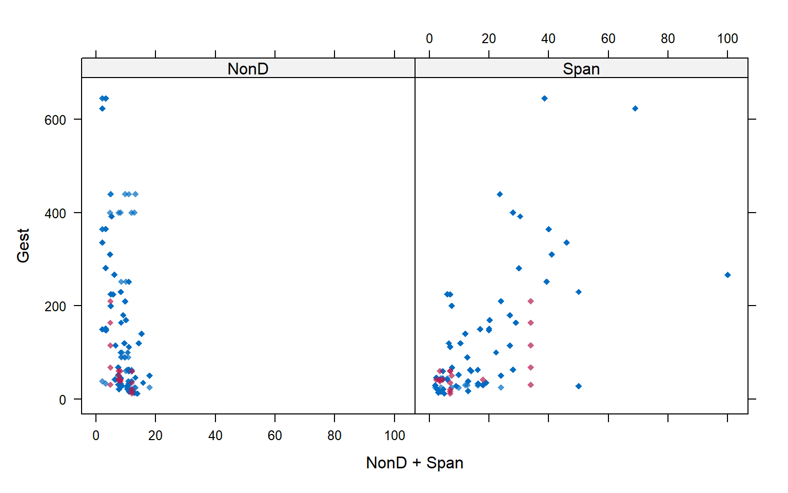
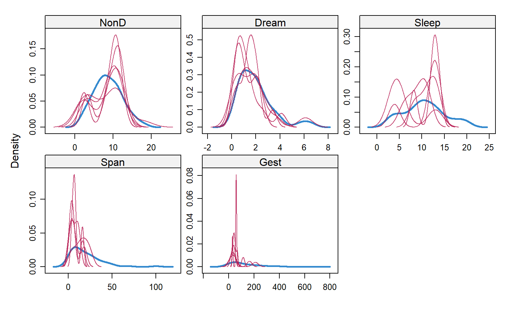
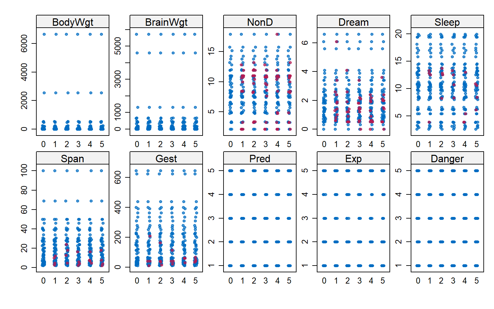

Tratamiento de valores perdidos con R
1 Introducción.
2 Laboratorio en R.
En esta sesión, realizaremos la imputación de datos perdidos utilizando técnicas básicas y por vecinos más cercanos.
Requerimos instalar los siguientes paquetes:
HmiscVIMmiceDMwR
Para DMwR, utilizar: remotes::install_github("cran/DMwR")
3 Exploración de valores perdidos.
3.1 Exploración básica.
Caso 1: Notas.
Iniciamos este ejemplo, creando un data.frame notas con alguna nota faltante.
notas <- data.frame(nombre = c("Jesus", "Carla", "Rodrigo", "Javier"),
nota = c(12, 15, 13, NA))
notas| nombre | nota |
|---|---|
| Jesus | 12 |
| Carla | 15 |
| Rodrigo | 13 |
| Javier | NA |
Exploramos visualmente el número de valores perdidos por variable: solo existe un valor aleatorio.
Finalmente, seleccionar los datos completos con complete.cases.
notas_comp <- notas[complete.cases(notas),]
notas_comp| nombre | nota |
|---|---|
| Jesus | 12 |
| Carla | 15 |
| Rodrigo | 13 |
3.2 Visualizaciones
Caso 2: Dataset sleep
Utilizaremos el conjunto de datos sleep del paquete VIM para realizar la exploración de valores perdidos en R.
- Instalación:
Necesitamos instalar el paquete VIM con el siguiente código en la consola: install.packages("VIM").
Luego, cargamos los datos de sleep y vemos las primeras filas del dataset utilizando el siguiente código:
# Carga los datos.
data(sleep, package = "VIM")
# Vemos las 6 primeras filas.
head(sleep)| BodyWgt | BrainWgt | NonD | Dream | Sleep | Span | Gest | Pred | Exp | Danger |
|---|---|---|---|---|---|---|---|---|---|
| 6654.000 | 5712.0 | NA | NA | 3.3 | 38.6 | 645 | 3 | 5 | 3 |
| 1.000 | 6.6 | 6.3 | 2.0 | 8.3 | 4.5 | 42 | 3 | 1 | 3 |
| 3.385 | 44.5 | NA | NA | 12.5 | 14.0 | 60 | 1 | 1 | 1 |
| 0.920 | 5.7 | NA | NA | 16.5 | NA | 25 | 5 | 2 | 3 |
| 2547.000 | 4603.0 | 2.1 | 1.8 | 3.9 | 69.0 | 624 | 3 | 5 | 4 |
| 10.550 | 179.5 | 9.1 | 0.7 | 9.8 | 27.0 | 180 | 4 | 4 | 4 |
Comprobaremos que el dataset “sleep” ahora aparece también en su Environment en RStudio.
Iniciamos la exploración inicial de este nuevo dataset con alguno de los siguientes comandos básicos:
str(sleep)## 'data.frame': 62 obs. of 10 variables:
## $ BodyWgt : num 6654 1 3.38 0.92 2547 ...
## $ BrainWgt: num 5712 6.6 44.5 5.7 4603 ...
## $ NonD : num NA 6.3 NA NA 2.1 9.1 15.8 5.2 10.9 8.3 ...
## $ Dream : num NA 2 NA NA 1.8 0.7 3.9 1 3.6 1.4 ...
## $ Sleep : num 3.3 8.3 12.5 16.5 3.9 9.8 19.7 6.2 14.5 9.7 ...
## $ Span : num 38.6 4.5 14 NA 69 27 19 30.4 28 50 ...
## $ Gest : num 645 42 60 25 624 180 35 392 63 230 ...
## $ Pred : int 3 3 1 5 3 4 1 4 1 1 ...
## $ Exp : int 5 1 1 2 5 4 1 5 2 1 ...
## $ Danger : int 3 3 1 3 4 4 1 4 1 1 ...dplyr::glimpse(sleep)## Rows: 62
## Columns: 10
## $ BodyWgt <dbl> 6654.000, 1.000, 3.385, 0.920, 2547.000, 10.550, 0.023, 160.0~
## $ BrainWgt <dbl> 5712.0, 6.6, 44.5, 5.7, 4603.0, 179.5, 0.3, 169.0, 25.6, 440.~
## $ NonD <dbl> NA, 6.3, NA, NA, 2.1, 9.1, 15.8, 5.2, 10.9, 8.3, 11.0, 3.2, 7~
## $ Dream <dbl> NA, 2.0, NA, NA, 1.8, 0.7, 3.9, 1.0, 3.6, 1.4, 1.5, 0.7, 2.7,~
## $ Sleep <dbl> 3.3, 8.3, 12.5, 16.5, 3.9, 9.8, 19.7, 6.2, 14.5, 9.7, 12.5, 3~
## $ Span <dbl> 38.6, 4.5, 14.0, NA, 69.0, 27.0, 19.0, 30.4, 28.0, 50.0, 7.0,~
## $ Gest <dbl> 645, 42, 60, 25, 624, 180, 35, 392, 63, 230, 112, 281, NA, 36~
## $ Pred <int> 3, 3, 1, 5, 3, 4, 1, 4, 1, 1, 5, 5, 2, 5, 1, 2, 2, 2, 1, 1, 5~
## $ Exp <int> 5, 1, 1, 2, 5, 4, 1, 5, 2, 1, 4, 5, 1, 5, 1, 2, 2, 2, 2, 1, 5~
## $ Danger <int> 3, 3, 1, 3, 4, 4, 1, 4, 1, 1, 4, 5, 2, 5, 1, 2, 2, 2, 1, 1, 5~summary(sleep)## BodyWgt BrainWgt NonD Dream
## Min. : 0.005 Min. : 0.14 Min. : 2.100 Min. :0.000
## 1st Qu.: 0.600 1st Qu.: 4.25 1st Qu.: 6.250 1st Qu.:0.900
## Median : 3.342 Median : 17.25 Median : 8.350 Median :1.800
## Mean : 198.790 Mean : 283.13 Mean : 8.673 Mean :1.972
## 3rd Qu.: 48.202 3rd Qu.: 166.00 3rd Qu.:11.000 3rd Qu.:2.550
## Max. :6654.000 Max. :5712.00 Max. :17.900 Max. :6.600
## NA's :14 NA's :12
## Sleep Span Gest Pred
## Min. : 2.60 Min. : 2.000 Min. : 12.00 Min. :1.000
## 1st Qu.: 8.05 1st Qu.: 6.625 1st Qu.: 35.75 1st Qu.:2.000
## Median :10.45 Median : 15.100 Median : 79.00 Median :3.000
## Mean :10.53 Mean : 19.878 Mean :142.35 Mean :2.871
## 3rd Qu.:13.20 3rd Qu.: 27.750 3rd Qu.:207.50 3rd Qu.:4.000
## Max. :19.90 Max. :100.000 Max. :645.00 Max. :5.000
## NA's :4 NA's :4 NA's :4
## Exp Danger
## Min. :1.000 Min. :1.000
## 1st Qu.:1.000 1st Qu.:1.000
## Median :2.000 Median :2.000
## Mean :2.419 Mean :2.613
## 3rd Qu.:4.000 3rd Qu.:4.000
## Max. :5.000 Max. :5.000
## En todos ellos observaremos una primera vista de los datos. Notaremos además, que existen valores NA, datos perdidos. La primera pregunta que nos hacemos es:
¿Cuántos datos están con valores NA en este dataset?
Para contar el número de valores perdidos por variable podemos usar este cálculo con la función apply que cuenta el número de valores perdidos (valores NA para R) por columna.
apply(sleep, 2, function(x){sum(is.na(x))})## BodyWgt BrainWgt NonD Dream Sleep Span Gest Pred
## 0 0 14 12 4 4 4 0
## Exp Danger
## 0 0Ahora podemos responder lo siguiente 👩🏫:
- ¿Cuántos valores perdidos hay en cada variable?
- ¿Qué variables tienen valores perdidos?
- ¿Qué variables tienen más valores perdidos? 🤚
Continuamos explorando los valores perdidos analizando el patrón de valores perdidos distribuidos en las diferentes variables del conjunto de datos (dataset). Esto nos ayudará a entender mejor nuestros datos.
Lo hacemos utilizando la función md.pattern y md.pairs del paquete MICE.
mice::md.pattern(sleep, rotate.names=TRUE)
## BodyWgt BrainWgt Pred Exp Danger Sleep Span Gest Dream NonD
## 42 1 1 1 1 1 1 1 1 1 1 0
## 9 1 1 1 1 1 1 1 1 0 0 2
## 3 1 1 1 1 1 1 1 0 1 1 1
## 2 1 1 1 1 1 1 0 1 1 1 1
## 1 1 1 1 1 1 1 0 1 0 0 3
## 1 1 1 1 1 1 1 0 0 1 1 2
## 2 1 1 1 1 1 0 1 1 1 0 2
## 2 1 1 1 1 1 0 1 1 0 0 3
## 0 0 0 0 0 4 4 4 12 14 38mice::md.pairs(sleep)## $rr
## BodyWgt BrainWgt NonD Dream Sleep Span Gest Pred Exp Danger
## BodyWgt 62 62 48 50 58 58 58 62 62 62
## BrainWgt 62 62 48 50 58 58 58 62 62 62
## NonD 48 48 48 48 48 45 44 48 48 48
## Dream 50 50 48 50 48 47 46 50 50 50
## Sleep 58 58 48 48 58 54 54 58 58 58
## Span 58 58 45 47 54 58 55 58 58 58
## Gest 58 58 44 46 54 55 58 58 58 58
## Pred 62 62 48 50 58 58 58 62 62 62
## Exp 62 62 48 50 58 58 58 62 62 62
## Danger 62 62 48 50 58 58 58 62 62 62
##
## $rm
## BodyWgt BrainWgt NonD Dream Sleep Span Gest Pred Exp Danger
## BodyWgt 0 0 14 12 4 4 4 0 0 0
## BrainWgt 0 0 14 12 4 4 4 0 0 0
## NonD 0 0 0 0 0 3 4 0 0 0
## Dream 0 0 2 0 2 3 4 0 0 0
## Sleep 0 0 10 10 0 4 4 0 0 0
## Span 0 0 13 11 4 0 3 0 0 0
## Gest 0 0 14 12 4 3 0 0 0 0
## Pred 0 0 14 12 4 4 4 0 0 0
## Exp 0 0 14 12 4 4 4 0 0 0
## Danger 0 0 14 12 4 4 4 0 0 0
##
## $mr
## BodyWgt BrainWgt NonD Dream Sleep Span Gest Pred Exp Danger
## BodyWgt 0 0 0 0 0 0 0 0 0 0
## BrainWgt 0 0 0 0 0 0 0 0 0 0
## NonD 14 14 0 2 10 13 14 14 14 14
## Dream 12 12 0 0 10 11 12 12 12 12
## Sleep 4 4 0 2 0 4 4 4 4 4
## Span 4 4 3 3 4 0 3 4 4 4
## Gest 4 4 4 4 4 3 0 4 4 4
## Pred 0 0 0 0 0 0 0 0 0 0
## Exp 0 0 0 0 0 0 0 0 0 0
## Danger 0 0 0 0 0 0 0 0 0 0
##
## $mm
## BodyWgt BrainWgt NonD Dream Sleep Span Gest Pred Exp Danger
## BodyWgt 0 0 0 0 0 0 0 0 0 0
## BrainWgt 0 0 0 0 0 0 0 0 0 0
## NonD 0 0 14 12 4 1 0 0 0 0
## Dream 0 0 12 12 2 1 0 0 0 0
## Sleep 0 0 4 2 4 0 0 0 0 0
## Span 0 0 1 1 0 4 1 0 0 0
## Gest 0 0 0 0 0 1 4 0 0 0
## Pred 0 0 0 0 0 0 0 0 0 0
## Exp 0 0 0 0 0 0 0 0 0 0
## Danger 0 0 0 0 0 0 0 0 0 0En estos gráficos y tablas observamos las diferentes combinaciones de valores perdidos que tenemos para nuestras variables. Ahora, podemos responder las siguiente preguntas:
- ¿Cuantas observaciones no tienen nigún valor perdido?
- ¿Cuantas observaciones no tienen nigún valor perdido?
Visualización de datos perdidos
sleep_aggr <- VIM::aggr(sleep, col = mice::mdc(1:2), numbers = TRUE,
sortVars = TRUE, labels = names(sleep),
cex.axis= 0.7, gap = 3,
ylab = c("Proporción de Pérdida",
"Patrón de Pérdida"))
##
## Variables sorted by number of missings:
## Variable Count
## NonD 0.22580645
## Dream 0.19354839
## Sleep 0.06451613
## Span 0.06451613
## Gest 0.06451613
## BodyWgt 0.00000000
## BrainWgt 0.00000000
## Pred 0.00000000
## Exp 0.00000000
## Danger 0.00000000Distribución de observaciones completas e incompletas por pares de variables
VIM::marginplot(sleep[ , c(3, 7)], pch = 19)
VIM::marginplot(sleep[ , c(3, 7)], col = c("blue", "red", "orange"), pch = 20)
Descripción:
Puntos azules (diagrama de dispersión): individuos con ambos valores de las variables.
Boxplots azules: boxplots de los valores no perdidos de cada variable
Puntos rojos (Eje X: NonD): individuos con valores perdidos en Gest pero observados en NonD.
Puntos rojos (Eje Y: Gest): individuos con valores perdidos en NonD pero observados en Gest.
Boxplots rojos: Representan la distribución marginal de los puntos rojos.
Nota: Si los datos perdidos son completamente aleatorios se espera que los boxplots rojos y azules sean idénticos
4 Imputación Univariada
4.1 Con la media.
instalamos la librería Hmisc para realizar imputaciones básicas. La instalación, la realizaremos utilizando el siguiente comando en la consola: install.packages("Hmisc").
Luego de completada la instalación, comprobamos cargando el paquete.
library(Hmisc)Si no tenemos mayor información, utilizaremos la media como valor de imputación. Es una imputación rápida, simple y sencilla.
notas$nota_imp <- with(notas, impute(nota, mean))
notas| nombre | nota | nota_imp |
|---|---|---|
| Jesus | 12 | 12.00000 |
| Carla | 15 | 15.00000 |
| Rodrigo | 13 | 13.00000 |
| Javier | NA | 13.33333 |
4.2 Con valor aleatorio.
Utilizamos un valor aleatorio como valor de imputación: Se selecciona aleatoriamente a partir de los valores no perdidos. Simple y útil en caso de MCAR.
notas$nota_imp <- with(notas, impute(nota, 'random'))
notas| nombre | nota | nota_imp |
|---|---|---|
| Jesus | 12 | 12 |
| Carla | 15 | 15 |
| Rodrigo | 13 | 13 |
| Javier | NA | 15 |
4.3 Con un valor específico.
Si tenemos información específica, o resulta conveniente, podemos imputar los datos perdidos con un valor específico.
notas$nota_imp <- with(notas, impute(nota, 99))
notas| nombre | nota | nota_imp |
|---|---|---|
| Jesus | 12 | 12 |
| Carla | 15 | 15 |
| Rodrigo | 13 | 13 |
| Javier | NA | 99 |
4.4 Manualmente
Por ultimo, la imputación puede realizarse sin el paquete Hmisc de la siguiente manera:
notas$nota[is.na(notas$nota)] <- mean(notas$nota, na.rm = T)
notas| nombre | nota | nota_imp |
|---|---|---|
| Jesus | 12.00000 | 12 |
| Carla | 15.00000 | 15 |
| Rodrigo | 13.00000 | 13 |
| Javier | 13.33333 | 99 |
5 Imputación Multivariada
5.1 Por regresión lineal.
Con la librería mice. Esta librería sirve para imputación múltiple pero podemos usarla también para imputación simple si definimos m=1.
library(mice)
imp <- mice(sleep, method = "norm.predict", m = 1, maxit=1) # Impute data##
## iter imp variable
## 1 1 NonD Dream Sleep Span Gestimp_reg <- complete(imp)Para missings en variables categorícas se puede utilizar regresión logistica con el argumento method="logreg". Ejemplo: mice(nhanes2, meth = c("sample", "norm.predict", "logreg", "norm.predict"))
Para ver otros métodos, podemos ver la documentación de la función mice escribiendo ?mice::mice en la consola.
5.2 Por K vecinos más cercanos.
Aplicamos vecions más cercanos y guardamos los resultados en sleep_imp
library(DMwR)
sleep_imp <- DMwR::knnImputation(sleep)
#View(sleep_imp)
summary(sleep_imp)## BodyWgt BrainWgt NonD Dream
## Min. : 0.005 Min. : 0.14 Min. : 2.100 Min. :0.000
## 1st Qu.: 0.600 1st Qu.: 4.25 1st Qu.: 5.800 1st Qu.:0.925
## Median : 3.342 Median : 17.25 Median : 8.350 Median :1.800
## Mean : 198.790 Mean : 283.13 Mean : 8.489 Mean :1.976
## 3rd Qu.: 48.202 3rd Qu.: 166.00 3rd Qu.:10.757 3rd Qu.:2.567
## Max. :6654.000 Max. :5712.00 Max. :17.900 Max. :6.600
## Sleep Span Gest Pred
## Min. : 2.60 Min. : 2.000 Min. : 12.00 Min. :1.000
## 1st Qu.: 6.95 1st Qu.: 6.125 1st Qu.: 35.75 1st Qu.:2.000
## Median :10.30 Median : 13.350 Median : 65.68 Median :3.000
## Mean :10.43 Mean : 19.133 Mean :138.65 Mean :2.871
## 3rd Qu.:13.20 3rd Qu.: 27.000 3rd Qu.:196.80 3rd Qu.:4.000
## Max. :19.90 Max. :100.000 Max. :645.00 Max. :5.000
## Exp Danger
## Min. :1.000 Min. :1.000
## 1st Qu.:1.000 1st Qu.:1.000
## Median :2.000 Median :2.000
## Mean :2.419 Mean :2.613
## 3rd Qu.:4.000 3rd Qu.:4.000
## Max. :5.000 Max. :5.000¿Hay datos perdidos ahora?
apply(sleep_imp, 2, function(x){sum(is.na(x))})## BodyWgt BrainWgt NonD Dream Sleep Span Gest Pred
## 0 0 0 0 0 0 0 0
## Exp Danger
## 0 05.3 Por bosques aleatorios.
library(missForest)
sleep_imp_rf <- missForest(sleep)## missForest iteration 1 in progress...done!
## missForest iteration 2 in progress...done!
## missForest iteration 3 in progress...done!print(sleep_imp$NonD, digits = 3)## [1] 2.28 6.30 10.28 10.63 2.10 9.10 15.80 5.20 10.90 8.30 11.00 3.20
## [13] 7.60 4.20 6.30 8.60 6.60 9.50 4.80 12.00 4.97 3.30 11.00 8.17
## [25] 4.70 10.54 10.40 7.40 2.10 9.21 7.65 7.70 17.90 6.10 8.20 8.40
## [37] 11.90 10.80 13.80 14.30 5.25 15.20 10.00 11.90 6.50 7.50 10.50 10.60
## [49] 7.40 8.40 5.70 4.90 4.60 3.20 9.66 8.10 11.00 4.90 13.20 9.70
## [61] 12.80 12.045.4 MICE
MICE: Multivariate Imputation by Chained Equations
Utilizaremos la metodología MICE: Multivariate Imputation by Chained Equations para realizar imputación multivariada.
La imputación con MICE puede ser simple o múltiple. Simple si solo se imputa el dataset inicial; y múltiple cuando se crean multiples datasets con diferentes imputaciones.
library(VIM)
library(mice)6 Imputación Múltiple
6.1 MICE
Utilizamos el paquete MICE: Imputación Multivariada por Chained Equations para realizar la imputación múltiple.
library(mice)La imputación se realiza con estas líneas de código:
imp1 <- mice(sleep, m = 5, seed = 2)##
## iter imp variable
## 1 1 NonD Dream Sleep Span Gest
## 1 2 NonD Dream Sleep Span Gest
## 1 3 NonD Dream Sleep Span Gest
## 1 4 NonD Dream Sleep Span Gest
## 1 5 NonD Dream Sleep Span Gest
## 2 1 NonD Dream Sleep Span Gest
## 2 2 NonD Dream Sleep Span Gest
## 2 3 NonD Dream Sleep Span Gest
## 2 4 NonD Dream Sleep Span Gest
## 2 5 NonD Dream Sleep Span Gest
## 3 1 NonD Dream Sleep Span Gest
## 3 2 NonD Dream Sleep Span Gest
## 3 3 NonD Dream Sleep Span Gest
## 3 4 NonD Dream Sleep Span Gest
## 3 5 NonD Dream Sleep Span Gest
## 4 1 NonD Dream Sleep Span Gest
## 4 2 NonD Dream Sleep Span Gest
## 4 3 NonD Dream Sleep Span Gest
## 4 4 NonD Dream Sleep Span Gest
## 4 5 NonD Dream Sleep Span Gest
## 5 1 NonD Dream Sleep Span Gest
## 5 2 NonD Dream Sleep Span Gest
## 5 3 NonD Dream Sleep Span Gest
## 5 4 NonD Dream Sleep Span Gest
## 5 5 NonD Dream Sleep Span Gestimp1## Class: mids
## Number of multiple imputations: 5
## Imputation methods:
## BodyWgt BrainWgt NonD Dream Sleep Span Gest Pred
## "" "" "pmm" "pmm" "pmm" "pmm" "pmm" ""
## Exp Danger
## "" ""
## PredictorMatrix:
## BodyWgt BrainWgt NonD Dream Sleep Span Gest Pred Exp Danger
## BodyWgt 0 1 1 1 1 1 1 1 1 1
## BrainWgt 1 0 1 1 1 1 1 1 1 1
## NonD 1 1 0 1 1 1 1 1 1 1
## Dream 1 1 1 0 1 1 1 1 1 1
## Sleep 1 1 1 1 0 1 1 1 1 1
## Span 1 1 1 1 1 0 1 1 1 1
## Number of logged events: 11
## it im dep meth out
## 1 1 5 Span pmm Sleep
## 2 1 5 Gest pmm Sleep
## 3 3 2 Span pmm Sleep
## 4 3 5 Span pmm Sleep
## 5 3 5 Gest pmm Sleep
## 6 4 1 Span pmm SleepEl argumento m=5 indica que se crearan 5 datasets de imputaciones.
Verificamos el métodos de imputación utilizado:
imp1$method## BodyWgt BrainWgt NonD Dream Sleep Span Gest Pred
## "" "" "pmm" "pmm" "pmm" "pmm" "pmm" ""
## Exp Danger
## "" ""Como vemos, se usó el método pmm (Predictive mean matching): Un método de imputación semi-parámetrico usado por defecto para variables continuas. - Selecciona un grupo de candidatos vecinos similares y cercanos, y toma uno aleatoriamente como donador.
- Para revisar todas la metodologías que tiene, se puede ver el artículo donde se presenta MICE.
Imputaciones para una variable en particular. Veamos el objeto imp1, que tiene una lista de imputados imp con un set de imputados para la columna NonD
head(imp1$imp$NonD)| 1 | 2 | 3 | 4 | 5 | |
|---|---|---|---|---|---|
| 1 | 3.2 | 3.3 | 2.1 | 2.1 | 3.2 |
| 3 | 10.0 | 12.0 | 10.8 | 11.9 | 11.0 |
| 4 | 11.0 | 10.4 | 12.8 | 17.9 | 13.2 |
| 14 | 2.1 | 3.2 | 3.2 | 2.1 | 3.2 |
| 21 | 12.8 | 11.9 | 7.6 | 4.7 | 8.2 |
| 24 | 8.4 | 11.0 | 11.0 | 11.0 | 10.0 |
Notemos que cada columna representa a un set de valores imputados para una variable.
6.2 Visualización.
Estos gráficos nos servirán para revisar si las imputaciones realizadas son muy variables entre diferentes datasets.
El primer gráfico muestra los valores perdidos para la variable en el eje Y: Gest.
Se muestran 6 cuadros correspondientes a
- La data original y
- Los 5 dataset construidos con la imputación multiple.
En rojo están las observaciones imputadas para la variable Gest (variable del eje Y); y en azul, todas las demás observaciones.
Los puntos azules son los datos observados y además imputaciones realizadas en la variable NonD (variable del eje X).
library(lattice)
xyplot(imp1, Gest ~ NonD | .imp, pch = 20, cex = 1.4)
En el siguiente gráfico observamos el mismo tipo de diagrama. Esta vez enfocado en el análisis de otra variable: NonD (Note la diferencia en la formula utilizada NonD ~ Gest).
A partir de los puntos rosados en los diferentes cuadros, se observan las variaciones en las imputaciones para NonD en los diferentes datasets contruídos durante la imputación múltiple.
Notemos a partir de estos gráficos que se están imputando valores fuera de la nube de puntos creada entre estas dos variables. Aunque podría suceder.
xyplot(imp1, NonD ~ Gest | .imp, pch = 20, cex = 1.4)
Finalmente, para observar los datos de las 5 imputaciones en un solo gráfico, tenemos el siguiente código.
Para la variable Gest
xyplot(imp1, Gest ~ NonD, pch = 18)
Para la variable NonD
xyplot(imp1, NonD ~ Gest, pch = 18)
Ademas, si queremos incluir una tercera variable al análisis podemos observarla cambiando la formula como el siguiente código.
xyplot(imp1, Gest ~ NonD + Span , pch = 18)
Veremos la relación de la variable Gest con Span además de con NonD.
Los puntos rosados son los valores imputados.
Finalmente, utilizaremos un gráfico para la densidad de las observaciones imputadas en cada dataset.
Esto nos mostrará si las diferentes imputaciones están concentradas en los mismos valores o si cambian entre diferentes datasets.
Cada densidad está representada en líneas de color rosado y representan la densidad para las imputaciones en uno de los 5 datasets de la imputación múltiple.
La densidad en color celeste representa la densidad de los valores observados.
densityplot(imp1)
Este gráfico compara la densidad de los datos observados versus la densidad de los datos imputados. Se espera que las líneas sean similares pero no idénticos.
Encontrar diferencias entre las diferentes imputaciones indica que las imputaciones varían entre diferentes datasets.
Streeplot
El último gráfico llamado stripplot muestra la distribución de cada variable y sus valores imputados en los multiples datasets.
Es otra forma de ver la distribución de los imputados en las diferentes muestras.
stripplot(imp1, pch = 20)
7 Modelamiento
7.1 Casos completos
El caso más simple y rápido será utilizando solo los datos completos. En este caso, omitimos las fila con valores perdidos y construimos nuestro modelo.
ajuste_cc <- lm(BodyWgt ~ Sleep + BrainWgt,
data = na.omit(sleep))
summary(ajuste_cc)##
## Call:
## lm(formula = BodyWgt ~ Sleep + BrainWgt, data = na.omit(sleep))
##
## Residuals:
## Min 1Q Median 3Q Max
## -616.89 -4.08 11.32 21.49 244.51
##
## Coefficients:
## Estimate Std. Error t value Pr(>|t|)
## (Intercept) 8.22805 51.15597 0.161 0.873
## Sleep -1.98795 4.25534 -0.467 0.643
## BrainWgt 0.52013 0.02735 19.021 <2e-16 ***
## ---
## Signif. codes: 0 '***' 0.001 '**' 0.01 '*' 0.05 '.' 0.1 ' ' 1
##
## Residual standard error: 120.8 on 39 degrees of freedom
## Multiple R-squared: 0.9141, Adjusted R-squared: 0.9097
## F-statistic: 207.6 on 2 and 39 DF, p-value: < 2.2e-167.2 Imputación simple.
Despues de una imputación simple, el resultado es un dataset con el mismo número de filas y columna pero con todos los datos llenos con algún valor imputado. Al realizar el modelamiento, se utilizan los resultados de la imputación realizada para entrenar el modelo.
ajuste_cc <- lm(BodyWgt ~ Sleep + BrainWgt, data = imp_reg)
summary(ajuste_cc)##
## Call:
## lm(formula = BodyWgt ~ Sleep + BrainWgt, data = imp_reg)
##
## Residuals:
## Min 1Q Median 3Q Max
## -1557.54 2.11 31.21 57.47 1539.80
##
## Coefficients:
## Estimate Std. Error t value Pr(>|t|)
## (Intercept) -125.50306 116.19496 -1.080 0.284
## Sleep 6.16125 9.68143 0.636 0.527
## BrainWgt 0.91376 0.04788 19.083 <2e-16 ***
## ---
## Signif. codes: 0 '***' 0.001 '**' 0.01 '*' 0.05 '.' 0.1 ' ' 1
##
## Residual standard error: 325.1 on 59 degrees of freedom
## Multiple R-squared: 0.8735, Adjusted R-squared: 0.8692
## F-statistic: 203.8 on 2 and 59 DF, p-value: < 2.2e-16Nota: Si deseamos utilizar la imputación para nuestra data de validación, tenemos que aplicar la metodología y modelos creados para la imputación a partir de la data de entrenamiento.
No deben realizarse modelos para imputaciones con los datos de validación sino podríamos sesgar la evaluación del modelo en la data de entrenamiento.
7.3 Imputación múltiple.
Luego de una imputación multiple, el entrenamiento del modelo debe realizarse en cada uno de los múltiples datasets imputados.
Multiples modelos serán entrenados a partir de los datasets. Es nuestra tarea evaluar la variabilidad de los modelos en los diferentes conjuntos de datos y analizar el performance conjunto de todos ellos. (Cuando los modelos sirven para entender el problema, es mejor buscar características estables entre diferentes imputaciones.)
Ejemplo en R: uso de regresión lineal para los múltiples datasets imputados. El resultados del modelo es el siguiente:
ajuste_imp <- with(imp1, lm( BodyWgt ~ Sleep + BrainWgt))
summary(ajuste_imp)| term | estimate | std.error | statistic | p.value | nobs |
|---|---|---|---|---|---|
| (Intercept) | -115.6272181 | 115.1974708 | -1.0037305 | 0.3196075 | 62 |
| Sleep | 5.3390965 | 9.7002572 | 0.5504077 | 0.5841177 | 62 |
| BrainWgt | 0.9117585 | 0.0475842 | 19.1609442 | 0.0000000 | 62 |
| (Intercept) | -119.0949473 | 117.8106771 | -1.0109011 | 0.3161917 | 62 |
| Sleep | 5.6116673 | 9.8814062 | 0.5679017 | 0.5722567 | 62 |
| BrainWgt | 0.9123582 | 0.0477696 | 19.0991238 | 0.0000000 | 62 |
| (Intercept) | -127.6447412 | 118.4513977 | -1.0776128 | 0.2855929 | 62 |
| Sleep | 6.3943518 | 9.9630342 | 0.6418077 | 0.5234839 | 62 |
| BrainWgt | 0.9140870 | 0.0480148 | 19.0376005 | 0.0000000 | 62 |
| (Intercept) | -124.3898523 | 111.4575654 | -1.1160288 | 0.2689346 | 62 |
| Sleep | 6.2677299 | 9.5362385 | 0.6572539 | 0.5135736 | 62 |
| BrainWgt | 0.9139619 | 0.0477936 | 19.1231024 | 0.0000000 | 62 |
| (Intercept) | -130.6310123 | 116.7065339 | -1.1193119 | 0.2675433 | 62 |
| Sleep | 6.7511747 | 9.9222146 | 0.6804101 | 0.4989063 | 62 |
| BrainWgt | 0.9146903 | 0.0479603 | 19.0718056 | 0.0000000 | 62 |
Note que es posible utilizar cualquier otra función en lugar de lm(). El resultado será una lista de modelos para cada dataset.
Performance del modelo en las 5 diferentes imputaciones con la librería performance.
library(performance)
lapply(ajuste_imp$analyses, performance)## [[1]]
## # Indices of model performance
##
## AIC | BIC | R2 | R2 (adj.) | RMSE | Sigma
## ---------------------------------------------------------
## 898.227 | 906.736 | 0.873 | 0.869 | 317.447 | 325.418
##
## [[2]]
## # Indices of model performance
##
## AIC | BIC | R2 | R2 (adj.) | RMSE | Sigma
## ---------------------------------------------------------
## 898.207 | 906.715 | 0.873 | 0.869 | 317.395 | 325.364
##
## [[3]]
## # Indices of model performance
##
## AIC | BIC | R2 | R2 (adj.) | RMSE | Sigma
## ---------------------------------------------------------
## 898.113 | 906.622 | 0.874 | 0.869 | 317.156 | 325.120
##
## [[4]]
## # Indices of model performance
##
## AIC | BIC | R2 | R2 (adj.) | RMSE | Sigma
## ---------------------------------------------------------
## 898.092 | 906.601 | 0.874 | 0.869 | 317.103 | 325.065
##
## [[5]]
## # Indices of model performance
##
## AIC | BIC | R2 | R2 (adj.) | RMSE | Sigma
## ---------------------------------------------------------
## 898.060 | 906.569 | 0.874 | 0.869 | 317.020 | 324.980Finalmente, el análisis de resultados se realizará combinando los resultados de cada modelos. En nuestro caso, se juntan los coeficientes y errores estándares de los 5 modelos de regresión.
Combinación de ajustes:
ajuste_comb <- pool(ajuste_imp)
summary(ajuste_comb)| term | estimate | std.error | statistic | df | p.value |
|---|---|---|---|---|---|
| (Intercept) | -123.4775543 | 116.1456478 | -1.0631268 | 56.89702 | 0.2922159 |
| Sleep | 6.0728040 | 9.8226090 | 0.6182476 | 56.84236 | 0.5388816 |
| BrainWgt | 0.9133712 | 0.0478443 | 19.0904921 | 57.04963 | 0.0000000 |
** R-Cuadrado ajustado combinado: **
pool.r.squared(ajuste_imp, adjusted=TRUE)## est lo 95 hi 95 fmi
## adj R^2 0.8692022 0.7916065 0.9193155 NaNEstos resultados definen el modelo final a evaluar con la data de validación.
8 Ejercicio
9 Anexos
knitr::opts_chunk$set(echo = TRUE)
knitr::opts_chunk$set(warning = FALSE)
knitr::opts_chunk$set(message = FALSE)
knitr::include_url("files/3_Tratamiento de datos perdidos.pdf", height = "600px")
notas <- data.frame(nombre = c("Jesus", "Carla", "Rodrigo", "Javier"),
nota = c(12, 15, 13, NA))
notas
notas_comp <- notas[complete.cases(notas),]
notas_comp
# Carga los datos.
data(sleep, package = "VIM")
# Vemos las 6 primeras filas.
head(sleep)
str(sleep)
dplyr::glimpse(sleep)
summary(sleep)
apply(sleep, 2, function(x){sum(is.na(x))})
mice::md.pattern(sleep, rotate.names=TRUE)
mice::md.pairs(sleep)
sleep_aggr <- VIM::aggr(sleep, col = mice::mdc(1:2), numbers = TRUE,
sortVars = TRUE, labels = names(sleep),
cex.axis= 0.7, gap = 3,
ylab = c("Proporción de Pérdida",
"Patrón de Pérdida"))
VIM::marginplot(sleep[ , c(3, 7)], pch = 19)
VIM::marginplot(sleep[ , c(3, 7)], col = c("blue", "red", "orange"), pch = 20)
# Imputación Univariada
library(Hmisc)
notas$nota_imp <- with(notas, impute(nota, mean))
notas
notas$nota_imp <- with(notas, impute(nota, 'random'))
notas
notas$nota_imp <- with(notas, impute(nota, 99))
notas
notas$nota[is.na(notas$nota)] <- mean(notas$nota, na.rm = T)
notas
# Imputación Multivariada
library(mice)
imp <- mice(sleep, method = "norm.predict", m = 1, maxit=1) # Impute data
imp_reg <- complete(imp)
library(DMwR)
sleep_imp <- DMwR::knnImputation(sleep)
#View(sleep_imp)
summary(sleep_imp)
apply(sleep_imp, 2, function(x){sum(is.na(x))})
library(missForest)
sleep_imp_rf <- missForest(sleep)
print(sleep_imp$NonD, digits = 3)
library(VIM)
library(mice)
# Imputación Multiple
library(mice)
imp1 <- mice(sleep, m = 5, seed = 2)
imp1
imp1$method
head(imp1$imp$NonD)
library(lattice)
xyplot(imp1, Gest ~ NonD | .imp, pch = 20, cex = 1.4)
xyplot(imp1, NonD ~ Gest | .imp, pch = 20, cex = 1.4)
xyplot(imp1, Gest ~ NonD, pch = 18)
xyplot(imp1, NonD ~ Gest, pch = 18)
xyplot(imp1, Gest ~ NonD + Span , pch = 18)
densityplot(imp1)
stripplot(imp1, pch = 20)
ajuste_cc <- lm(BodyWgt ~ Sleep + BrainWgt,
data = na.omit(sleep))
summary(ajuste_cc)
ajuste_cc <- lm(BodyWgt ~ Sleep + BrainWgt, data = imp_reg)
summary(ajuste_cc)
ajuste_imp <- with(imp1, lm( BodyWgt ~ Sleep + BrainWgt))
summary(ajuste_imp)
library(performance)
lapply(ajuste_imp$analyses, performance)
ajuste_comb <- pool(ajuste_imp)
summary(ajuste_comb)
pool.r.squared(ajuste_imp, adjusted=TRUE)